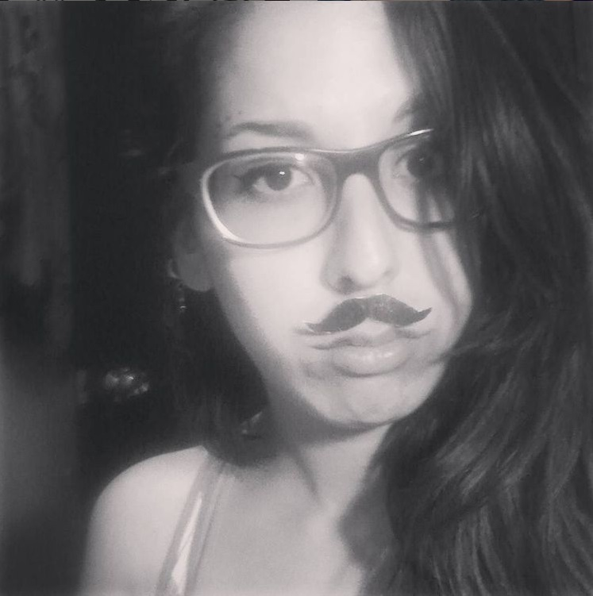
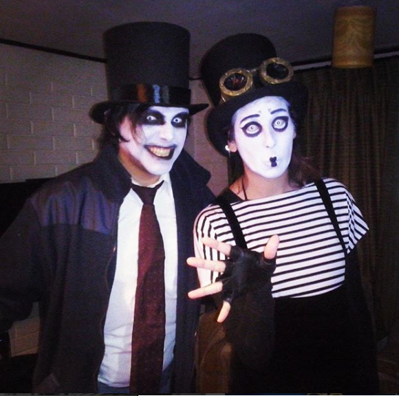

Andrea Mariana Oyarce Espinoza

Contacto: +56 9 48155534
amoyarcee@gmail.com
amoyarcee@gmail.com
Enlaces directos
Experiencia Laboral
- Promotora y vendedora: Caramba juguetes inteligentes.
- Voluntariado:"Cuentos que curan".
- Ejucutiva comercial: Turistik-Teleféricos.
- Asistente de Cliente: CasaIdeas.
- Reponedor: Mattel.
- CallCenter: VTR.
- Práctica profesional: Educadora de Párvulos (UMCE).
- Encuestadora: CODELCO-UC.
- Venderora: Panadería San Camilo.
- Animadora Eventos infantiles.
- Emprendimiento en ferias artesanales libres.

Evento de halloween
Estudios
Formación Académica
- 2018: Primer Semestre de Diseño en Comunicación Visual (UTEM).
- 2012-2017: Licenciatura en Educación y Pedagogía en Educación Parvularia con mención en Inglés (UMCE).
- 2007-2010: Educación Media, Matemático-físico. Colegio Boston College San Martín.
Habilidades y conocimientos
- Idiomas: Inglés: Avanzado oral y escrito (nivel 16 de 20 según test de wall street english).
Japonés: Básico oral y escrito (aprendizaje autodidacta) - Microsoft office: excel, word y power point.
- Certificado de títeres gigantes.
.png)
- III Congreso UC de Arte-Educación.
- Curso de pedagogía Waldorf y materiales nobles.
- Curso de Comunicación y expresión
- Curso de Neurofisiología del desarrollo humano.
- Curso de Neurociencias
- Curso de Gestión y proyectos.
- Curso de Liderazgo y Desarrollo organizacional.
- Curso de Laboratorio de inglés y práctica del idioma.
Actividades de interés:
- Lectura.
- Artes visuales.
- Artes plásticas.
- Videojuegos. Mi juego favorito
- Actividad física y Yoga.